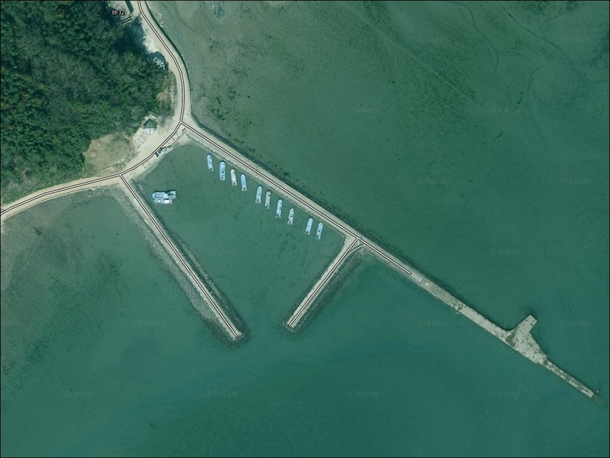
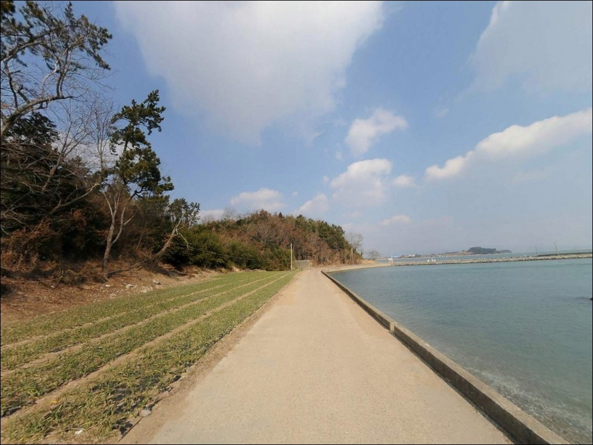
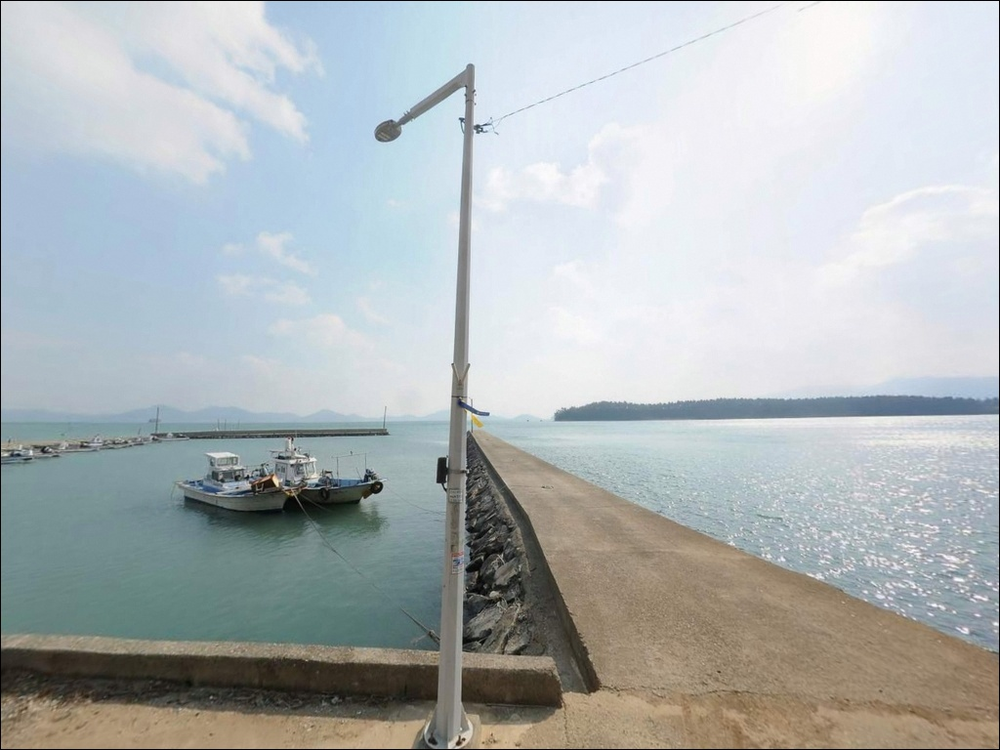
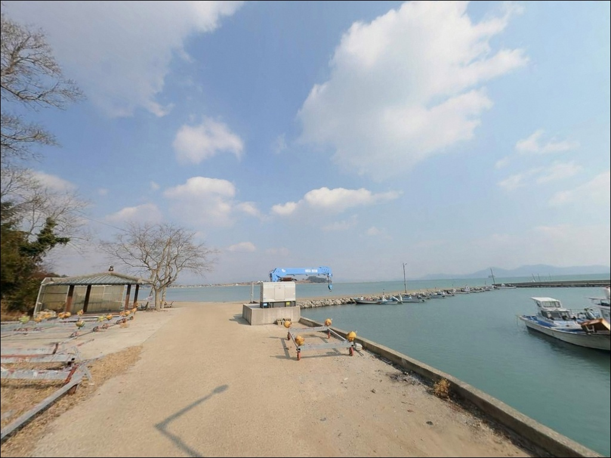
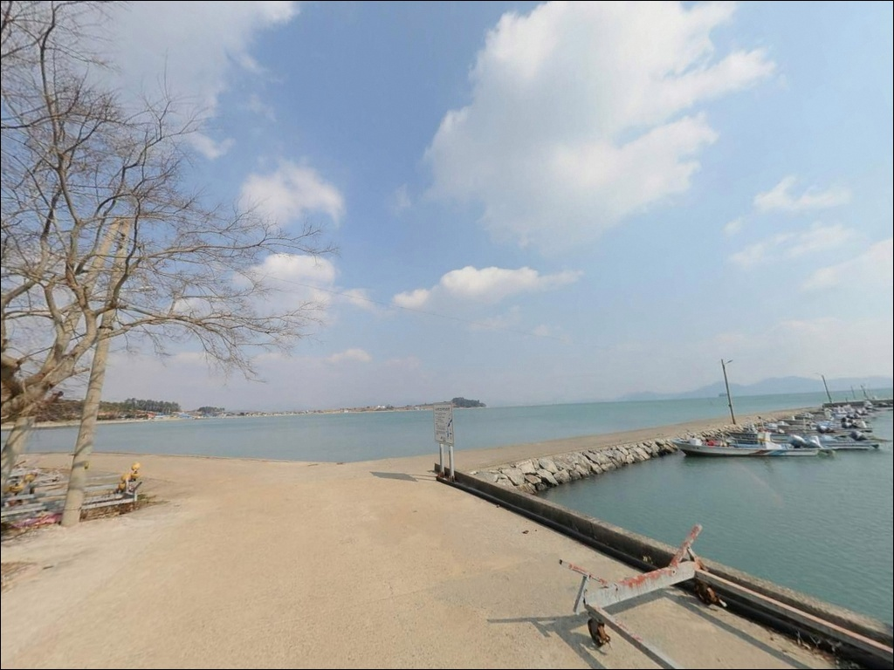
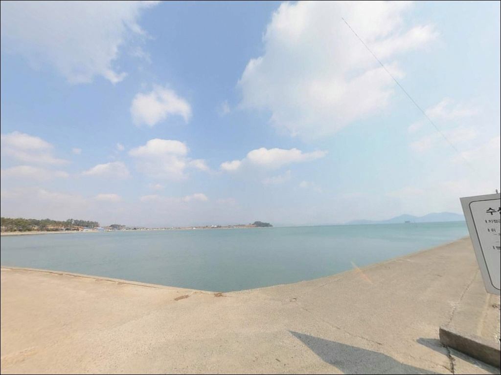
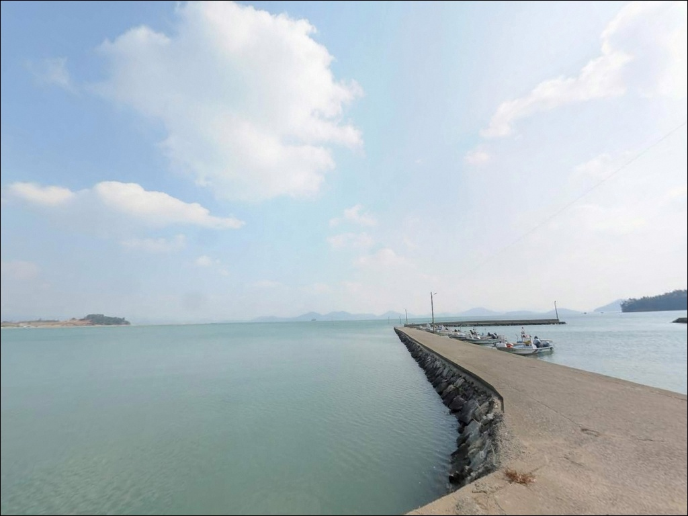
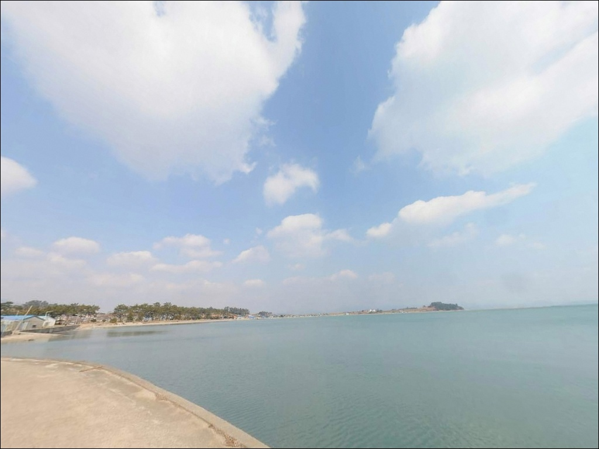
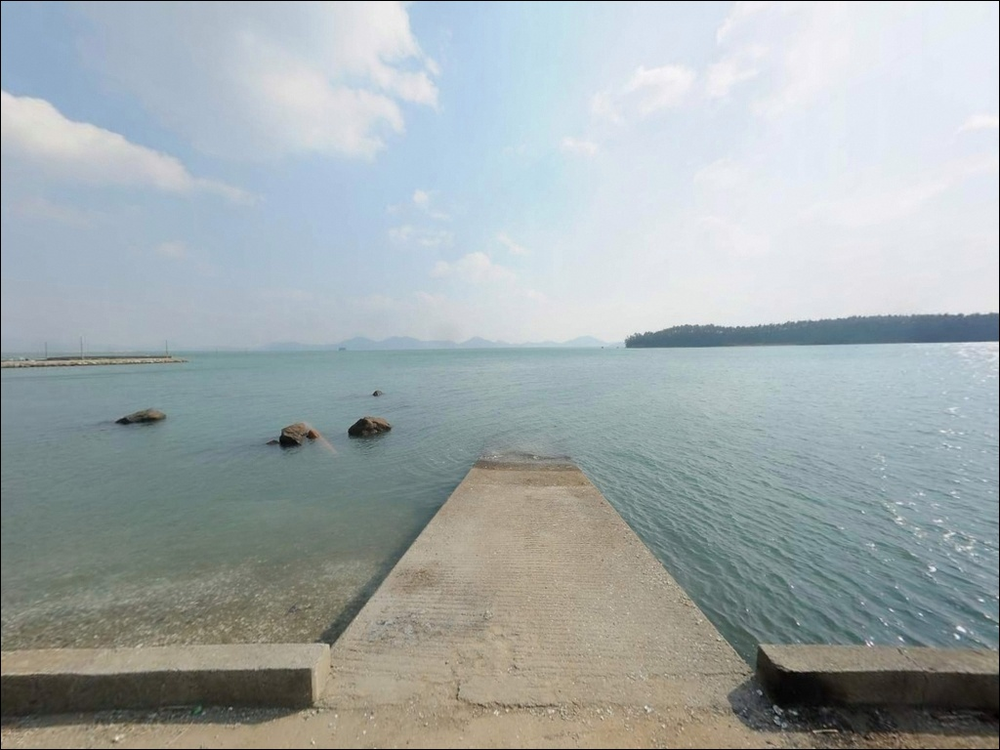

내동리방파제, 전남 해남군 안전 확인된 방파제 차박 낚시 명당
이 페이지에는 광고(제휴 링크 포함)가 있으며, 광고 링크를 통해 구매하면 운영자가 판매 수익 또는 수수료를 받을 수 있습니다. 포인트 사진: 카카오맵 스카이뷰·로드뷰. 이 페이지의 지도·사진 이미지는 카카오맵의 실제 서비스 이미지와 다를 수 있습니다.


포인트 안내
내동리방파제
전남 해남군 북일면 내동리 926-4
강진만 내만 방파제에서 가장 먼저 확인해야 할 것은
수위입니다.
간조와 만조 사이 수심 차가 수 미터에 달하는
서남해안 특성상,
물때를 맞추지 않고 들어서면
채비를 던질 수 있는 공간 자체가
사라질 수 있습니다.
내동리방파제는 해남 북일면 내만 연안에 위치한
소형 어촌형 방파제입니다.
사내방조제와 연결된 내항 구조로 외해 파도 영향이 적고,
뻘과 모래가 섞인 완경사 바닥에
양식장이 인접한 전형적인
강진만 내만형 낚시 포인트입니다.
이 글은 내동리방파제의
진입 동선, 차박 여건, 물때 판단 기준,
낚시 스타일별 공략 조건에 집중합니다.
조황 단정이나 특정 어종 보장은
이 글의 범위에 포함되지 않습니다.

1. 진입 동선과 포인트 접근성
북일면 소재지에서 내동리 방향으로 이어지는
포장도로가 해안 선착장까지 연결되어 있습니다.
면소재지에서 내동리 방파제까지
비포장 구간 없이 승용차 기준
진입 가능한 노면 상태를 갖추고 있습니다.
다만 방파제 직전 해안 접근 구간은
1~1.5차선 폭의 좁은 마을도로가 이어집니다.
대형 SUV나 캠핑카 진입 시에는
출발 전 위성지도로 해당 구간을
미리 확인하는 편이 안전합니다.
방파제 입구 측면 공터와
해안 도로변 확폭 구간에 주차가 가능합니다.
회차는 방파제 입구 공터에서 가능하지만
대형 차량의 회차는 제한적인 구조입니다.
어선 이동 동선을 막지 않는 자리 선정이
현장 매너의 기본입니다.

2. 차박 환경과 야간 체류 여건
내동리는 민가 밀집도가 낮은 어촌 마을이라
야간 차량 통행이 적고
전체적으로 조용한 편입니다.
마을 외곽 방파제 인근은
차량 한두 대 정도 머물기 좋은
소규모 차박 후보 공간이 됩니다.
강진만 내만 특성상 외해 파도와 바람 영향이 적어
야간 소음 측면에서는 양호한 편입니다.
다만 방파제 등대 외에 가로등이 제한적이라
개인 조명 장비는 반드시 준비해야 합니다.
헤드랜턴과 랜턴을 별도로 갖추는 것이
야간 안전의 기본입니다.
주차 공간이 넉넉하지 않아
차박을 메인 목적으로 삼기에는
다소 협소한 환경입니다.
낚시를 마치고 잠시 체류하는 용도로
소형 차량 기준 활용 가능한 수준이며,
주말에는 다른 낚시인과
공간을 나눠야 할 수 있습니다.


3. 주변 편의시설 및 인프라 현황
내동리방파제 반경 3km 이내에서
편의점이나 식당을 기대하기는 어렵습니다.
북일면 소재지 방향으로 이동하면
소규모 상가와 생활 인프라를 이용할 수 있지만,
포인트에서 차량으로 5~7분 거리입니다.
식수, 얼음, 낚시 소품은
출발 전에 미리 갖추는 편이 현실적입니다.
해남읍까지는 약 12km 거리로,
부족한 물품이 생길 경우
이동 시간이 상당히 소요됩니다.
연료도 사전에 채워두는 것이 좋습니다.
응급 상황 발생 시
해남군 보건의료원은 해남읍에 위치합니다.
내동리에서 해남읍까지는 약 12km이므로
비상 상황에 대비한 사전 준비를
갖추고 입장하는 것이 기본입니다.

4. 낚시 효율을 결정하는 방문 전 준비사항
내동리방파제 방문에서 가장 먼저 확인할 것은
물때입니다.
강진만 내만은 간조 시 방파제 내항 쪽 수심이
크게 낮아지는 구조로,
만조 전후 타이밍을 먼저 계산하고
출발 시각을 맞추는 것이
이 포인트를 제대로 활용하는 기본 전략입니다.
바다타임에서 북일면 기준 물때를 확인하고,
들물이 들어오기 1~2시간 전에
자리를 잡는 방식이 효율적입니다.
출조 당일 기상청 해상예보도
반드시 한 번 더 확인하는 편이
불필요한 헛걸음을 막습니다.
내만형 방파제 특성상
간조 시 발판이 젖어 미끄럽습니다.
갯바위화 또는 미끄럼 방지 신발을 신고,
구명조끼는 상시 착용이 기본입니다.
야간 낚시라면 헤드랜턴과 예비 조명을
반드시 챙겨야 합니다.
만조 시 방파제 일부 구간에
바닷물이 올라오는 구조입니다.
수위 변화를 주기적으로 확인하면서
자리를 잡는 것이 안전 수칙의 기본입니다.

5. 지형 기반 낚시 여건 분석
내동리방파제의 지형 특성은
강진만 내만이 만드는 조용한 수면 구조에 있습니다.
사내방조제(3,260m)와 연결된 내항 구조로
외해 파도가 직접 들어오지 않고,
바닥은 뻘과 모래가 혼합된
완경사형 내만 지형입니다.
수심은 만조 기준 방파제 전면이
3~5m 내외 수준입니다.
간조 시에는 내항 쪽이 1m 이하로 낮아지므로
실질적인 낚시는 외항 방향으로
원투하거나 방파제 끝단을 노리는 방식이
이 포인트 구조에 맞습니다.
방파제 끝단과 꺾이는 지점 주변에서
수심이 비교적 빠르게 깊어지는 구간이 형성됩니다.
양식장이 인접한 구조는
회유성 어종의 먹이 활동을 유인하는 조건이 되며,
가을철 내만 어종의 활성도가
높아지는 시기에 접근 가치가 있습니다.
출조 전에 해남 북일면 일대 최신 조황은
반드시 검색해 보시기 바랍니다.


6. 포인트에 어울리는 낚시 스타일
이 포인트 지형에 가장 잘 맞는 낚시는
원투낚시입니다.
뻘과 모래가 혼합된 내만 바닥에
청갯지렁이를 미끼로 사용해
만조 전후 외항 방향으로 원투하면
망둥어와 붕장어를 기대해 볼 수 있는
지형 조건을 갖추고 있습니다.
찌낚시도 이 포인트에 어울리는 스타일입니다.
조류가 완만하게 흐르는 내만 구조상
저부력 채비나 막대찌를 활용한
예민한 공략이 효과적입니다.
방파제 끝단과 양식장 주변 라인을 공략하면
감성돔이 접근하는 가을철에
기대해 볼 수 있는 자리입니다.
숭어 찌낚시도 이 지형과 잘 맞습니다.
내만 연안 특성상 숭어 회유가 활발하며,
봄~가을 수온이 안정되는 시기에
소형 루어 또는 전용 채비를 활용하면
방파제 내항과 외항 모두에서
공략이 가능한 어종입니다.
야간에는 방파제 가로등 주변으로
집어되는 우럭이나
학공치 낚시를 노려볼 수 있습니다.
소형 지그헤드 채비로
방파제 주변을 천천히 탐색하는 방식이
라이트게임 스타일로 어울립니다.

7. 대안 포인트와 플랜 B 동선
내동리방파제가 간조로 수위가 낮거나
주차 여건이 여의치 않을 때는
강진만을 대표하는 방파제로 이동하는 것이
가장 현실적인 대안입니다.
약 7km 거리에 위치한 마량항 방파제는
규모가 크고 원투·찌·루어 모두 가능한
복합 포인트입니다.
북일면 해안선을 따라
만수리·금당리·방산리 일대 방조제와
배수갑문 포인트가 연속으로 분포합니다.
같은 내만 해역 조건을 공유하는 곳들이라
내동리방파제 조건이 맞지 않을 때
해안선 따라 이동하면서 탐색하기 좋은
동선입니다.
갈두항과 사내방조제 구간도
대안 포인트로 활용할 수 있습니다.
사내방조제는 내동항과 직접 연결된 구조로
조류 흐름이 다소 달라지는 지점을
노릴 수 있으며,
갈두항은 외해 영향을 일부 받는
어종 다양성이 있는 포인트입니다.

물때를 알면 달라지는
강진만 내만 낚시 포인트
원투낚시나 찌낚시를 주로 즐기는 낚시인이라면
내동리방파제의 내만형 지형 조건이
잘 맞는 구조입니다.
뻘·모래 혼합 바닥에 양식장이 인접한 구조는
망둥어·붕장어·숭어 등
연안 생활 어종을 기대해 볼 수 있는
조건을 갖추고 있습니다.
다만 물때 계산 없이 간조에 입장하거나
대형 차량으로 좁은 해안 접근로를
사전 확인 없이 진입하면
낚시보다 이동에 더 많은 시간을
쓰게 될 수 있습니다.
물때 확인, 진입로 사전 점검, 자급 준비,
이 세 가지가 갖춰지면
조용하고 여유 있는 강진만 낚시를
즐길 수 있는 포인트입니다.
외해 파도 없이 잔잔한 내만에서
들물이 들어오는 타이밍을 기다리며
차 옆에 자리를 깔고 머무는 낚시 여행자라면,
소형 차량 기준으로 조용하게
하룻밤 체류하기 좋은 포인트입니다.